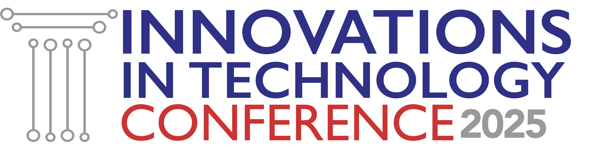

<!DOCTYPE html>
<html>
	<head>
		<!--
			For each slideshow:
			* Update the title tag below
			* Update the favicon below
			* Uncomment the disired font stylesheet below
			* Select the desired font family (`--font-family-default` variable) in **assets/scss/_variables.scss**
			* Add variables and style overrides in **assets/scss/_custom.scss**
		-->
		<title>E-Filing: Bridging the Gap Between Guided Interviews and Court Dockets</title>
		<meta charset="utf-8">
		<link rel="icon" type="image/x-icon" href="assets/lit-lab-logos/lit-favicon.svg">
		<!-- Google Fonts -->
		<link rel="preconnect" href="https://fonts.googleapis.com">
		<link rel="preconnect" href="https://fonts.gstatic.com" crossorigin>
		<!-- <link href="https://fonts.googleapis.com/css2?family=Albert+Sans:ital,wght@0,100..900;1,100..900&display=swap" rel="stylesheet"> -->
		<link href="https://fonts.googleapis.com/css2?family=Atkinson+Hyperlegible:ital,wght@0,400;0,700;1,400;1,700&display=swap" rel="stylesheet">
		<!-- <link href="https://fonts.googleapis.com/css2?family=Jost:ital,wght@0,100..900;1,100..900&display=swap" rel="stylesheet"> -->

		<!-- Icons -->
		<link rel="stylesheet" href="https://cdn.jsdelivr.net/npm/bootstrap-icons@1.11.3/font/bootstrap-icons.min.css">

		<link rel="stylesheet" href="/assets/css/normalize.css">
		<link rel="stylesheet" href="/assets/css/style.css">
		<link rel="stylesheet" href="custom.css">
	</head>
	<body>
		<script src="https://remarkjs.com/downloads/remark-latest.min.js"></script>
		<script>
			var slideshow = remark.create({
				ratio: '16:9',
				sourceUrl: 'slides.md'
			});
		</script>
		<script>
			// const slides = document.querySelectorAll('.remark-slide-content');
			const footer = document.createElement('div');
						footer.classList.add('itc25-footer');
			const hashtag = document.createElement('div');
						hashtag.classList.add('itc25-hashtag', 'col');
						hashtag.innerText = '#LSCITC';
			const logo = document.createElement('div');
						logo.classList.add('itc25-logo', 'col');
						logo.innerHTML = '';
						footer.append(hashtag, logo);

			slideshow.on('afterShowSlide', function (slide) {
				let currentSlide = document.querySelector('.remark-visible .remark-slide-content');
				currentSlide.append(footer);
			});
		</script>
	</body>
</html>